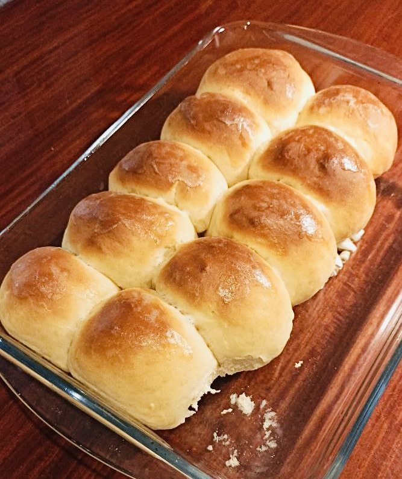

Home
Buns Recipe

Description
Soft, delicious buns that can go with breakfast, lunch,
and dinner. Easy to make, quick to bake. Perfectly suited for
midnight eating sessions.
Ingredients
- Milk (100 ml)
- Flour (700 g)
- Honey (2 tbsp)
- Water (200 ml)
- Melted butter (2 tbsp)
- Salt (1 tsp)
- Baker's yeast (1 tbsp)
Steps
- Add milk, water, honey, and melted butter
in a saucepan. Stir until combined.
- Let the mixture simmer on low heat until
it's warm to touch (closer to hot).
- Pour the mixture into a bowl and sprinke
the yeast on top, stir it a little, and
leave for 5 mintues until it's foamy.
- Add flour and salt and mix, then knead the
dough for 8-10 minutes until smooth.
- Cover the bowl with a damp towel and
let the dough rise for 20 minutes.
- Divide the dough into equal-sized balls
and put them in a greased baking dish.
Cover the dish with a damp towel and
let the dough pieces rise for 20 more
minutes.
- Uncover the dish and put it in the oven
pre-heated to 200 C°. Bake for 20
minutes.
- Done.